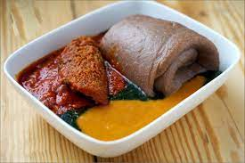

Amala with Gbegiri and Ewedu Soup

Description
This classic Nigerian dish is highly savoury and delicious. The combination of Ewedu soup, Gbegiri and stew forms a mouthwatering soup that aids the smooth passage of Amala down the throat and to the stomach.
Ingredients
- Yam Flour (Elubo)
- 1 Cup Ewedu leaves
- 2 cups of Beans
- Locust beans
- 8 Scotch bonnets(ata rodo)
- 2 Bell Peppers (optional)
- Onions
- 8-10 Chilli Peppers
- Ground Crayfish
- Seasoning cubes
- Assorted meat
- Salt to taste
- Palm oil
- Other Seasonings (curry and thyme)
Instructions
- Gbegiri Preparation
- Peel beans using any technique you find convenient then wash thoroughly to remove skin residue. Next, pour peeled beans into a cooking pot with enough water to cook it soft. When beans are very soft, mash with a jute broom while still in pot or pour into a blender and puree into a smooth consistency.
- Pour pureed cooked beans into pot; add blended peppers/onion, palm oil, seasoning cubes, ground crayfish and leave to cook. Tate for salt and add some more water if too thick.
- Ewedu Preparation
- Pour thoroughly washed ewedu leaves into blender and blend. Pour back into a small pot; add locust beans, ground crayfish and a pinch of salt to taste. Allow to cook on low heat.
- Stew Preparation
- Add 1 or 2 cooking spoons of palm oil and slice few onions into a thick, hot pan. Allow to fry for 2-3 minutes, then add pepper, salt, maggi and some other seasonings to your satisfaction.
- Leave all to cook for 10-12 minutes, add the assorted meat and taste it. If its too spicy, let it cook for another 10 minutes.
- Amala Preparation
- Bring water to boil in a pot. Still on the stove, sprinkle in yam flour and turn with a wooden ladle till you've it smooth and solid.
- To ensure it's well cooked, add a bit of water, then cover to steam on low heat for about 3-5 minutes.
- Stir properly and your soft amala is ready!
- Serve with Gbegiri, ewedu and some stew.
Note
- Gbegiri is best enjoyed spicy and should be served hot.